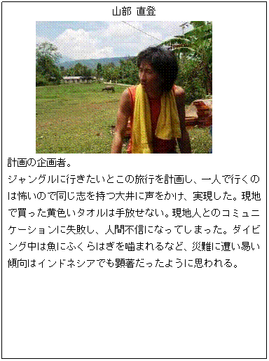
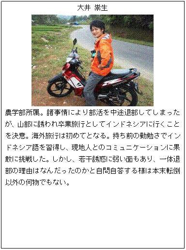

旅行概要
旅行期間: 2010年3月4日～3月23日
旅行地域: インドネシア３島（ジャワ島、ロンボク島、スマトラ島）
ルートマップ

メンバー紹介

山部 直登

大井 祟生

中倉 健
全20日間の記録 (目次)
3月4日(木)
日本(セントレア)から香港経由にてインドネシア首都、ジャカルタへ
3月5日(金)
ロンボク島、スンギギへ
3月6日(土)
ギリ・トゥラワガンへPADI OWDレッスンスタート
3月7日(日)
ギリ・トゥラワガンでダイビング
3月8日(月)
ギリ・トゥラワガンでダイビング
3月9日(火)
ギリ・トゥラワガンでダイビング レッスン終了後、スンギギへ
3月10日(水)
スンギギからジャカルタへ
3月11日(木)
ジャカルタ→スマトラ島(ビントゥアン)
3月12日(金)
ビントゥアン→パジャン
3月13日(土)
パジャン→パガララム
3月14日(日)
パガララム→モレイニム
3月15日(月)
モレイニム→(バス車内泊)
3月16日(火)
→ブキティンギ
3月17日(水)
ブキティンギ滞在
3月18日(木)
ブキティンギ滞在
3月19日(金)
ブキティンギ→パダン
3月20日(土)
パダン滞在
3月21日(日)
パダン→ジャカルタ
3月22日(月)
ジャカルタ滞在
3月23日(火)
ジャカルタ→香港経由→日本帰国